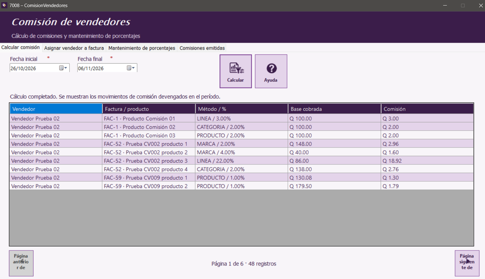

Inicio | Calcular comisión | Asignar vendedor a factura | Mantenimiento de porcentajes | Comisiones emitidas | Botones y mensajes
Consultar comisiones por período
- Abre la pestaña Calcular comisión.
- Selecciona Fecha inicial y Fecha final para delimitar el período.
- Pulsa Calcular y revisa el resultado en la tabla.
El reporte presenta los movimientos de comisión devengados por pagos confirmados dentro del período. Muestra vendedor, factura o producto, método y porcentaje, base cobrada y comisión.

Ejemplo de consulta de comisiones por período.
Si hay más registros de los que caben en la tabla, usa Página anterior y Página siguiente. El indicador inferior muestra la página actual y el total de registros.
Manual de usuario · Comisión de vendedores · Aplicación de Ventas y cuentas por cobrar